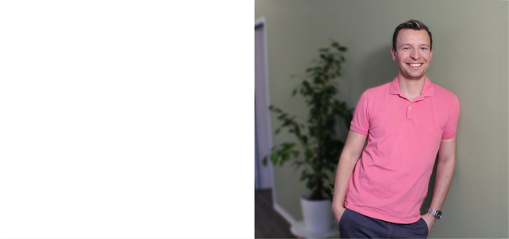
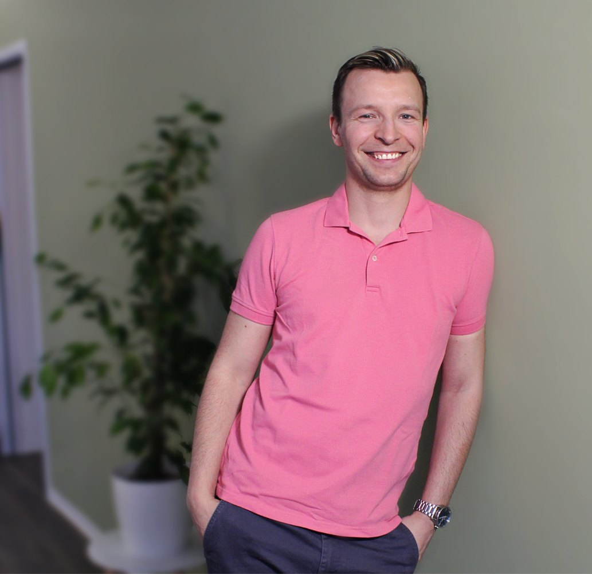

Ganzheitliche Osteopathie und Chiropraktik — für Erwachsene, Schwangere, Kinder und Säuglinge. Ich helfe Ihrem Körper, ins Gleichgewicht zurückzufinden.
Zur Online-Terminbuchung
Ganzheitliche manuelle Behandlung von Funktionsstörungen und Bewegungseinschränkungen — für mehr Mobilität und Wohlbefinden.

Sanfte Behandlung bei Schlafproblemen, Koliken, Schädelasymmetrien oder Unruhe — speziell für die Kleinsten.

Unterstützung für einen körperlich angenehmen, schmerzfreien Verlauf — gute Mobilisierung für Mutter und Kind.

Gezielte manuelle Behandlung des Bewegungsapparats — Blockaden lösen, Gelenkfunktion wiederherstellen, Schmerzen lindern.

Eine ganzheitliche manuelle Medizin. Der Osteopath sucht und behandelt Funktionsstörungen, die mit Bewegungseinschränkungen einhergehen und in den verschiedenen Geweben des Körpers Gesundheit und Wohlbefinden beeinträchtigen. Grundlage ist ein ganzheitliches Körperverständnis, verbunden mit genauen Kenntnissen der Anatomie. Es wird versucht, dem Körper verloren gegangene Mobilität zurückzugeben und so die Selbstheilungskräfte anzuregen, um ihn ins Gleichgewicht zurückzuführen.
Osteopathie ist … einen Teil des ganzen Systems so zu korrigieren, dass die Lebensflüsse besser fließen und sich der Körper wieder selbst regulieren kann.“ A.T. Still
Christoph Uhlmann — Heilpraktiker, Osteopath und Physiotherapeut. Seit 2021 behandle ich in meiner eigenen Praxis am Johannisplatz in Limbach-Oberfrohna.
Abitur
Physiotherapeut
Bachelor of Science für Rehabilitations-, Präventions- und Fitnesssport an der TU Chemnitz
Heilpraktiker
Zertifizierter Therapeut für ganzheitliche Chiropraktik und Manuelle Gelenktherapie
Zertifizierter HWS- und Atlas-Therapeut
6-jährige Osteopathieausbildung an der Still Academy
Besondere Inhalte der Ausbildung neben viszeraler, parietaler und cranialer Osteopathie:
Manuelle Behandlungsform, die sich auf die Diagnose, Behandlung und Prävention von Funktionsstörungen des Bewegungsapparates konzentriert, insbesondere der Wirbelsäule. Durch gezielte Handgriffe (Justierungen) werden dabei Blockaden gelöst, um Gelenkfunktionen wiederherzustellen, Schmerzen zu lindern und die Selbstheilungskräfte zu fördern.
Terminablauf & Vorteile
Vorteil:
Wir behandeln regelmäßig Patientinnen und Patienten aus dem Umland — mehr dazu: Chiropraktik in Chemnitz.


Während der Behandlungen bin ich leider nicht telefonisch erreichbar, aber Sie können gern auf den Anrufbeantworter sprechen oder mir eine E-Mail schreiben. Ich werde Sie schnellstmöglich kontaktieren.
Praxis für Osteopathie & Chiropraktik · Johannisplatz 4/2 · 09212 Limbach-Oberfrohna